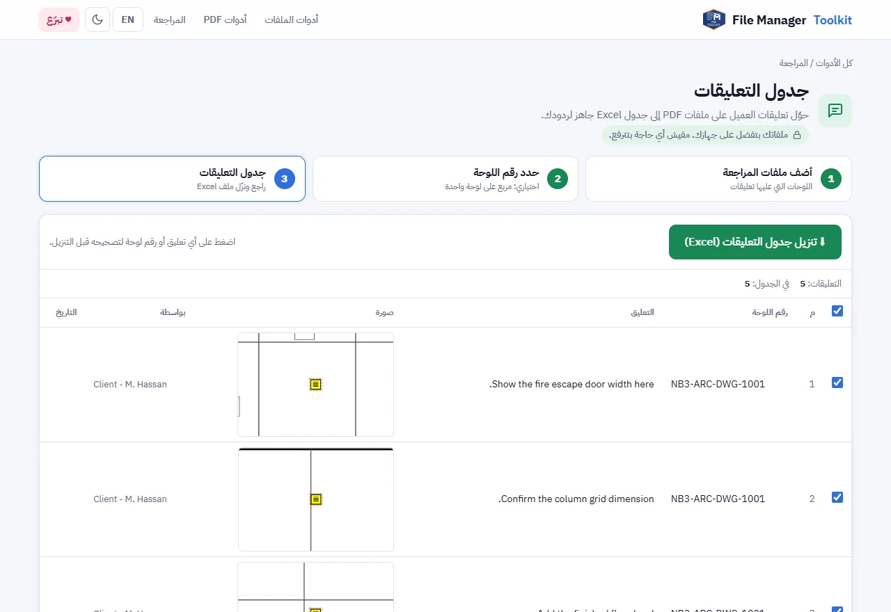

طريقة تصدير تعليقات Bluebeam إلى Excel
حوّل الماركب والتعليقات في ملف PDF تمت مراجعته على Bluebeam إلى جدول رد على التعليقات في Excel، فيه رقم اللوحة والتعليق وكاتبه وصورة لكل تعليق، جاهز لردودك.
ملفاتك بتفضل على جهازك. مفيش أي حاجة بتترفع.
الإجابة باختصار
تعليقات Bluebeam تُحفظ داخل ملف الـ PDF كتعليقات PDF عادية. افتح أداة تعليقات PDF إلى Excel، وأضف الملفات، واضغط تنزيل Excel: ستحصل على صف لكل تعليق فيه رقم اللوحة والصفحة والتعليق وكاتبه وتاريخه وصورة للمكان الذي يشير إليه.
طريقتان لعمل ذلك
من داخل Bluebeam Revu: افتح الـ Markups List، وفلترها لو احتجت، وصدّرها إلى CSV أو Summary. هذا مناسب لو معك Revu وتحتاج القائمة الخام فقط.
بدون Revu، كجدول رد على التعليقات: عندما ترجع الملفات من العميل أو الاستشاري وتحتاج جدولاً للرد على كل تعليق، أداة تعليقات PDF إلى Excel تعمله مباشرة من الملفات. وتعمل أيضاً مع تعليقات Acrobat و PDF-XChange و Foxit وأي قارئ PDF آخر، فيجمع جدول واحد تعليقات كل من راجع اللوحات.
خطوة بخطوة
اجمع الملفات المراجَعة
ضع ملفات الـ PDF التي عليها تعليقات في فولدر واحد. يمكن أن تكون لوحات منفصلة أو ملفاً مجمعاً، تمت مراجعتها على Bluebeam أو أي قارئ PDF آخر.
أضفها إلى الأداة
افتح تعليقات PDF إلى Excel واختر الملفات أو الفولدر. كل التعليقات تظهر، السحابات والـ Callouts ومربعات النص والملاحظات والتظليل، ومعها أي ردود.
راجع القائمة
كل تعليق يظهر برقم اللوحة ونص التعليق ومن كتبه ومتى. ألغِ تحديد أي شيء لا تريده في الجدول.
نزّل جدول Excel
اضغط تنزيل Excel. كل صف فيه صورة للمكان المعلَّم عليه، وعمودان فارغان للرد والحالة لفريقك.
رد وأعد الإرسال
اكتب رداً على كل تعليق، وحدد الحالة، وأرسل الجدول مع اللوحات المعدّلة.

نصائح
- اطلب من المراجعين كتابة التعليق داخل الماركب نفسه، لا مجرد رسم سحابة: السحابة بدون نص لا يوجد ما يُرد عليه فيها.
- التعليقات المدموجة (Flattened) لم تعد تعليقات، بل أصبحت جزءاً من اللوحة. اطلب الملف قبل الدمج.
- احتفظ بجدول الردود مع الـ Revision: يمكن أن يذكر Transmittal الإصدار التالي أن "التعليقات تمت معالجتها حسب جدول الردود".
اعمل جدول الرد على التعليقات
مجاني، يعمل داخل متصفحك، ولوحاتك لا تخرج من جهازك أبداً.
افتح أداة تعليقات PDF إلى Excel ←أسئلة شائعة
هل أحتاج Bluebeam Revu لتصدير التعليقات؟
لا. Bluebeam يحفظ التعليقات كتعليقات PDF عادية، فيمكن قراءتها من الملف بدون Revu.
ما التعليقات التي يتم تصديرها؟
كل تعليق على الصفحة: السحابات والـ Callouts ومربعات النص والملاحظات والتظليل وغيرها، مع نص التعليق والردود. أما التعليقات المدموجة فهي جزء من الصفحة ولا يمكن قراءتها كتعليقات.
هل يمكن جمع تعليقات Bluebeam و Acrobat في جدول واحد؟
نعم. أضف كل الملفات المراجَعة معاً، وتعليقات كل البرامج تظهر في نفس جدول Excel.
هل هو مجاني؟
نعم، بدون حساب وبدون حد لعدد الملفات.
هل تُرفع ملفات الـ PDF؟
لا. المتصفح يفتحها على جهازك ولا يُرسل أي شيء إلى سيرفر.